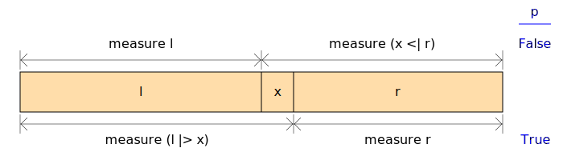

| Copyright | Ross Paterson and Ralf Hinze 2006 Ross Paterson 2006-2022 James Cranch 2021 |
|---|---|
| License | BSD-style |
| Maintainer | R.Paterson@city.ac.uk |
| Stability | experimental |
| Portability | non-portable (MPTCs and functional dependencies) |
| Safe Haskell | Safe |
| Language | Haskell2010 |
Data.FingerTree
Description
A general sequence representation with arbitrary annotations, for use as a base for implementations of various collection types, as described in section 4 of
- Ralf Hinze and Ross Paterson, "Finger trees: a simple general-purpose data structure", Journal of Functional Programming 16:2 (2006) pp 197-217. http://staff.city.ac.uk/~ross/papers/FingerTree.html
For a directly usable sequence type, see Data.Sequence, which is
a specialization of this structure.
An amortized running time is given for each operation, with n referring to the length of the sequence. These bounds hold even in a persistent (shared) setting.
Note: Many of these operations have the same names as similar
operations on lists in the Prelude. The ambiguity may be resolved
using either qualification or the hiding clause.
Synopsis
- data FingerTree v a
- class Monoid v => Measured v a | a -> v where
- measure :: a -> v
- empty :: Measured v a => FingerTree v a
- singleton :: Measured v a => a -> FingerTree v a
- (<|) :: Measured v a => a -> FingerTree v a -> FingerTree v a
- (|>) :: Measured v a => FingerTree v a -> a -> FingerTree v a
- (><) :: Measured v a => FingerTree v a -> FingerTree v a -> FingerTree v a
- fromList :: Measured v a => [a] -> FingerTree v a
- null :: FingerTree v a -> Bool
- data ViewL s a
- viewl :: Measured v a => FingerTree v a -> ViewL (FingerTree v) a
- data ViewR s a
- viewr :: Measured v a => FingerTree v a -> ViewR (FingerTree v) a
- data SearchResult v a
- = Position !(FingerTree v a) a !(FingerTree v a)
- | OnLeft
- | OnRight
- | Nowhere
- search :: Measured v a => (v -> v -> Bool) -> FingerTree v a -> SearchResult v a
- split :: Measured v a => (v -> Bool) -> FingerTree v a -> (FingerTree v a, FingerTree v a)
- takeUntil :: Measured v a => (v -> Bool) -> FingerTree v a -> FingerTree v a
- dropUntil :: Measured v a => (v -> Bool) -> FingerTree v a -> FingerTree v a
- reverse :: Measured v a => FingerTree v a -> FingerTree v a
- fmap' :: (Measured v1 a1, Measured v2 a2) => (a1 -> a2) -> FingerTree v1 a1 -> FingerTree v2 a2
- fmapWithPos :: (Measured v1 a1, Measured v2 a2) => (v1 -> a1 -> a2) -> FingerTree v1 a1 -> FingerTree v2 a2
- fmapWithContext :: (Measured v1 a1, Measured v2 a2) => (v1 -> a1 -> v1 -> a2) -> FingerTree v1 a1 -> FingerTree v2 a2
- unsafeFmap :: (a -> b) -> FingerTree v a -> FingerTree v b
- foldlWithPos :: Measured v a => (b -> v -> a -> b) -> b -> FingerTree v a -> b
- foldrWithPos :: Measured v a => (v -> a -> b -> b) -> b -> FingerTree v a -> b
- foldlWithContext :: Measured v a => (b -> v -> a -> v -> b) -> b -> FingerTree v a -> b
- foldrWithContext :: Measured v a => (v -> a -> v -> b -> b) -> b -> FingerTree v a -> b
- traverse' :: (Measured v1 a1, Measured v2 a2, Applicative f) => (a1 -> f a2) -> FingerTree v1 a1 -> f (FingerTree v2 a2)
- traverseWithPos :: (Measured v1 a1, Measured v2 a2, Applicative f) => (v1 -> a1 -> f a2) -> FingerTree v1 a1 -> f (FingerTree v2 a2)
- traverseWithContext :: (Measured v1 a1, Measured v2 a2, Applicative f) => (v1 -> a1 -> v1 -> f a2) -> FingerTree v1 a1 -> f (FingerTree v2 a2)
- unsafeTraverse :: Applicative f => (a -> f b) -> FingerTree v a -> f (FingerTree v b)
Documentation
data FingerTree v a Source #
A representation of a sequence of values of type a, allowing
access to the ends in constant time, and append and split in time
logarithmic in the size of the smaller piece.
The collection is also parameterized by a measure type v, which
is used to specify a position in the sequence for the split operation.
The types of the operations enforce the constraint Measured v av is determined by a.
A variety of abstract data types can be implemented by using different element types and measurements.
Instances
class Monoid v => Measured v a | a -> v where Source #
Things that can be measured.
Instances
| Measured v a => Measured v (FingerTree v a) Source # | O(1). The cached measure of a tree. |
Defined in Data.FingerTree Methods measure :: FingerTree v a -> v Source # | |
Construction
empty :: Measured v a => FingerTree v a Source #
O(1). The empty sequence.
singleton :: Measured v a => a -> FingerTree v a Source #
O(1). A singleton sequence.
(<|) :: Measured v a => a -> FingerTree v a -> FingerTree v a infixr 5 Source #
O(1). Add an element to the left end of a sequence. Mnemonic: a triangle with the single element at the pointy end.
(|>) :: Measured v a => FingerTree v a -> a -> FingerTree v a infixl 5 Source #
O(1). Add an element to the right end of a sequence. Mnemonic: a triangle with the single element at the pointy end.
(><) :: Measured v a => FingerTree v a -> FingerTree v a -> FingerTree v a infixr 5 Source #
O(log(min(n1,n2))). Concatenate two sequences.
fromList :: Measured v a => [a] -> FingerTree v a Source #
Deconstruction
null :: FingerTree v a -> Bool Source #
O(1). Is this the empty sequence?
Examining the ends
View of the left end of a sequence.
Instances
| Functor s => Functor (ViewL s) Source # | |
| Generic (ViewL s a) Source # | |
| (Read a, Read (s a)) => Read (ViewL s a) Source # | |
| (Show a, Show (s a)) => Show (ViewL s a) Source # | |
| (Eq a, Eq (s a)) => Eq (ViewL s a) Source # | |
| (Ord a, Ord (s a)) => Ord (ViewL s a) Source # | |
| type Rep (ViewL s a) Source # | |
Defined in Data.FingerTree type Rep (ViewL s a) = D1 ('MetaData "ViewL" "Data.FingerTree" "fingertree-0.1.5.0-Giwitp12LPIDULoEcsvbRk" 'False) (C1 ('MetaCons "EmptyL" 'PrefixI 'False) (U1 :: Type -> Type) :+: C1 ('MetaCons ":<" ('InfixI 'RightAssociative 5) 'False) (S1 ('MetaSel ('Nothing :: Maybe Symbol) 'NoSourceUnpackedness 'NoSourceStrictness 'DecidedLazy) (Rec0 a) :*: S1 ('MetaSel ('Nothing :: Maybe Symbol) 'NoSourceUnpackedness 'NoSourceStrictness 'DecidedLazy) (Rec0 (s a)))) | |
viewl :: Measured v a => FingerTree v a -> ViewL (FingerTree v) a Source #
O(1). Analyse the left end of a sequence.
View of the right end of a sequence.
Constructors
| EmptyR | empty sequence |
| (s a) :> a infixl 5 | the sequence minus the rightmost element, and the rightmost element |
Instances
| Functor s => Functor (ViewR s) Source # | |
| Generic (ViewR s a) Source # | |
| (Read a, Read (s a)) => Read (ViewR s a) Source # | |
| (Show a, Show (s a)) => Show (ViewR s a) Source # | |
| (Eq a, Eq (s a)) => Eq (ViewR s a) Source # | |
| (Ord a, Ord (s a)) => Ord (ViewR s a) Source # | |
| type Rep (ViewR s a) Source # | |
Defined in Data.FingerTree type Rep (ViewR s a) = D1 ('MetaData "ViewR" "Data.FingerTree" "fingertree-0.1.5.0-Giwitp12LPIDULoEcsvbRk" 'False) (C1 ('MetaCons "EmptyR" 'PrefixI 'False) (U1 :: Type -> Type) :+: C1 ('MetaCons ":>" ('InfixI 'LeftAssociative 5) 'False) (S1 ('MetaSel ('Nothing :: Maybe Symbol) 'NoSourceUnpackedness 'NoSourceStrictness 'DecidedLazy) (Rec0 (s a)) :*: S1 ('MetaSel ('Nothing :: Maybe Symbol) 'NoSourceUnpackedness 'NoSourceStrictness 'DecidedLazy) (Rec0 a))) | |
viewr :: Measured v a => FingerTree v a -> ViewR (FingerTree v) a Source #
O(1). Analyse the right end of a sequence.
Search
data SearchResult v a Source #
A result of search, attempting to find a point where a predicate
on splits of the sequence changes from False to True.
Since: 0.1.2.0
Constructors
| Position !(FingerTree v a) a !(FingerTree v a) | A tree opened at a particular element: the prefix to the left, the element, and the suffix to the right. |
| OnLeft | A position to the left of the sequence, indicating that the
predicate is |
| OnRight | A position to the right of the sequence, indicating that the
predicate is |
| Nowhere | No position in the tree, returned if the predicate is |
Instances
search :: Measured v a => (v -> v -> Bool) -> FingerTree v a -> SearchResult v a Source #
O(log(min(i,n-i))). Search a sequence for a point where a predicate
on splits of the sequence changes from False to True.
The argument p is a relation between the measures of the two
sequences that could be appended together to form the sequence t.
If the relation is False at the leftmost split and True at the
rightmost split, i.e.
not (pmempty(measuret)) && p (measuret)mempty
then there must exist an element x in the sequence such that p
is False for the split immediately before x and True for the
split just after it:

In this situation, search p tx and the
pieces l and r of the sequence to its left and right respectively.
That is, it returns Position l x r
l >< (x <| r) = t
not (p (measure l) (measure (x <| r))
p (measure (l |> x)) (measure r)
For predictable results, one should ensure that there is only one such
point, i.e. that the predicate is monotonic on t.
Since: 0.1.2.0
Splitting
These functions are special cases of search.
split :: Measured v a => (v -> Bool) -> FingerTree v a -> (FingerTree v a, FingerTree v a) Source #
takeUntil :: Measured v a => (v -> Bool) -> FingerTree v a -> FingerTree v a Source #
dropUntil :: Measured v a => (v -> Bool) -> FingerTree v a -> FingerTree v a Source #
Transformation
reverse :: Measured v a => FingerTree v a -> FingerTree v a Source #
O(n). The reverse of a sequence.
Maps
fmap' :: (Measured v1 a1, Measured v2 a2) => (a1 -> a2) -> FingerTree v1 a1 -> FingerTree v2 a2 Source #
Like fmap, but with constraints on the element types.
fmapWithPos :: (Measured v1 a1, Measured v2 a2) => (v1 -> a1 -> a2) -> FingerTree v1 a1 -> FingerTree v2 a2 Source #
Map all elements of the tree with a function that also takes the measure of the prefix of the tree to the left of the element.
fmapWithContext :: (Measured v1 a1, Measured v2 a2) => (v1 -> a1 -> v1 -> a2) -> FingerTree v1 a1 -> FingerTree v2 a2 Source #
Map all elements of the tree with a function that also takes the measure of the prefix to the left and of the suffix to the right of the element.
Since: 0.1.2.0
unsafeFmap :: (a -> b) -> FingerTree v a -> FingerTree v b Source #
Like fmap, but safe only if the function preserves the measure.
Folds
foldlWithPos :: Measured v a => (b -> v -> a -> b) -> b -> FingerTree v a -> b Source #
Fold the tree from the left with a function that also takes the measure of the prefix to the left of the element.
Since: 0.1.5.0
foldrWithPos :: Measured v a => (v -> a -> b -> b) -> b -> FingerTree v a -> b Source #
Fold the tree from the right with a function that also takes the measure of the prefix to the left of the element.
Since: 0.1.5.0
foldlWithContext :: Measured v a => (b -> v -> a -> v -> b) -> b -> FingerTree v a -> b Source #
Fold the tree from the left with a function that also takes the measure of the prefix to the left of the element and the measure of the suffix to the right of the element.
Since: 0.1.5.0
foldrWithContext :: Measured v a => (v -> a -> v -> b -> b) -> b -> FingerTree v a -> b Source #
Fold the tree from the right with a function that also takes the measure of the prefix to the left of the element and the measure of the suffix to the right of the element.
Since: 0.1.5.0
Traversals
traverse' :: (Measured v1 a1, Measured v2 a2, Applicative f) => (a1 -> f a2) -> FingerTree v1 a1 -> f (FingerTree v2 a2) Source #
Like traverse, but with constraints on the element types.
traverseWithPos :: (Measured v1 a1, Measured v2 a2, Applicative f) => (v1 -> a1 -> f a2) -> FingerTree v1 a1 -> f (FingerTree v2 a2) Source #
Traverse the tree from left to right with a function that also takes the measure of the prefix of the tree to the left of the element.
traverseWithContext :: (Measured v1 a1, Measured v2 a2, Applicative f) => (v1 -> a1 -> v1 -> f a2) -> FingerTree v1 a1 -> f (FingerTree v2 a2) Source #
Traverse the tree from left to right with a function that also takes the measure of the prefix to the left and the measure of the suffix to the right of the element.
Since: 0.1.2.0
unsafeTraverse :: Applicative f => (a -> f b) -> FingerTree v a -> f (FingerTree v b) Source #
Like traverse, but safe only if the function preserves the measure.
Example
Particular abstract data types may be implemented by defining
element types with suitable Measured instances.
(from section 4.5 of the paper)
Simple sequences can be implemented using a Sum monoid
as a measure:
newtype Elem a = Elem { getElem :: a }
instance Measured (Sum Int) (Elem a) where
measure (Elem _) = Sum 1
newtype Seq a = Seq (FingerTree (Sum Int) (Elem a))Then the measure of a subsequence is simply its length. This representation supports log-time extraction of subsequences:
take :: Int -> Seq a -> Seq a take k (Seq xs) = Seq (takeUntil (> Sum k) xs) drop :: Int -> Seq a -> Seq a drop k (Seq xs) = Seq (dropUntil (> Sum k) xs)
The module Data.Sequence is an optimized instantiation of this type.
For further examples, see Data.IntervalMap.FingerTree and Data.PriorityQueue.FingerTree.